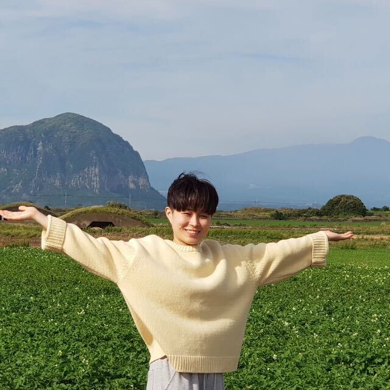

Students/alumni
Current Students
Madison Layfield Second-year Ph.D. in Biostatistics Research interest: Integrative analysis |
Zichen Zhang Second-year PhD in Statistics Research interest: TWAS, integrative analysis Won a poster talk at ASHG 2021 |
|  | Ye Eun Bae Third-year Ph.D. in Biostatistics Research interest: TWAS, integrative analysis Received the Clara Kibler Davis Scholarship, an award for excellent woman graduate student in FSU Stat Department |
 |
Hunter Melton Third-year PhD in Biostatistics Research interest: DNA methylation, integrative analysis |
Meng Zhuo Third-year Ph.D. in Statistics Research interest: Meta-analysis |
Austin King Fifth-year Ph.D. in Biostatistics Research interest: Polygenic risk score |
Shengjie Jiang Fifth-year Ph.D. in Biostatistics Research interest: IWAS |